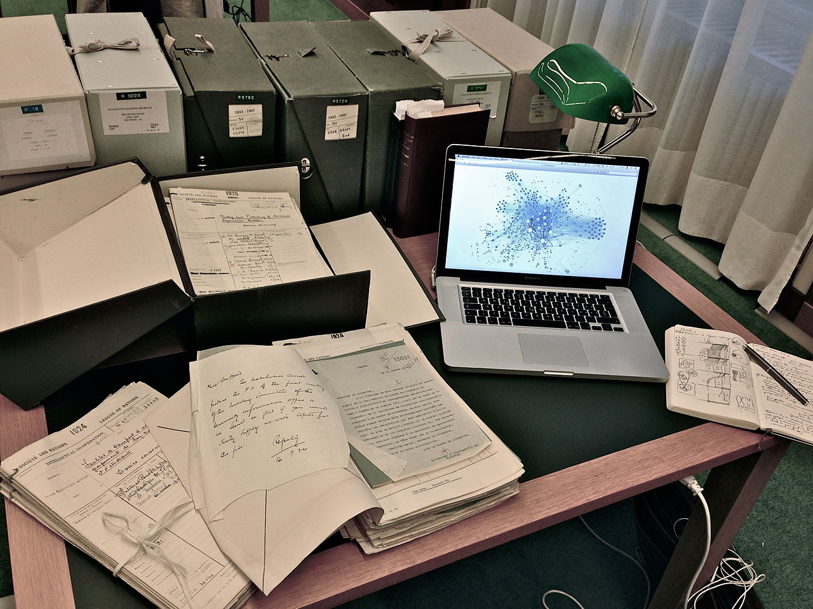
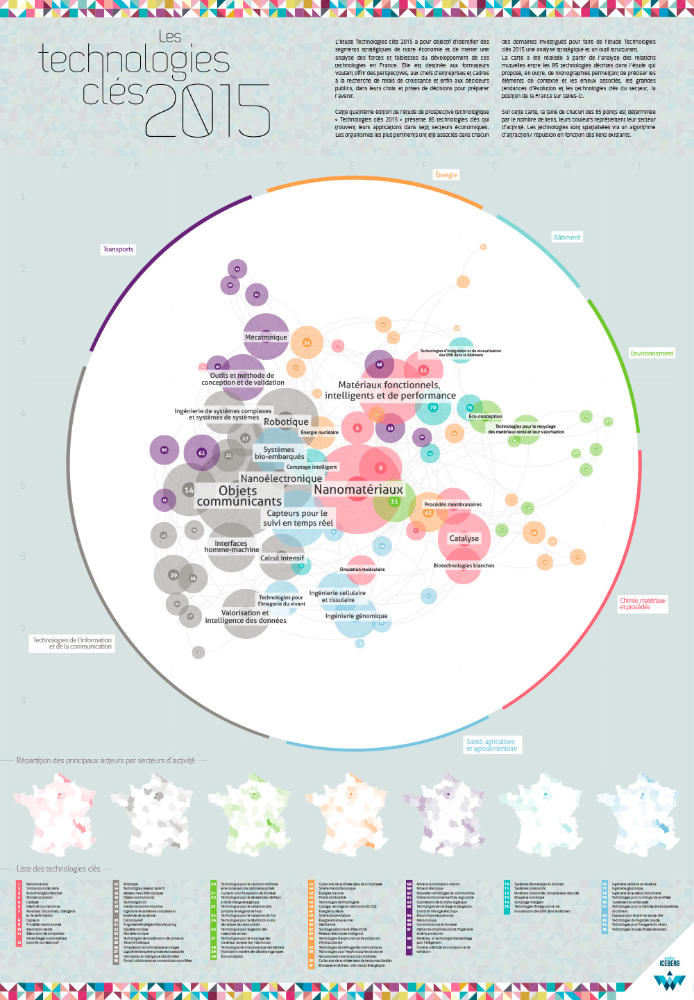

Voir le Web comme un espace
Alexis Jacomy @ SudWeb 2015

2013 - 2014
Analyse visuelle des réseaux
Développement de
sigma.js

2014 - aujourd'hui
Cartographie des réseaux
Visualisation de données
Tableaux de bords
Un peu de contexte
Août 1991
Premier site Web mis en ligne au CERN
1998
Plus de deux millions de sites en mars
Moteurs de recherche
Septembre 1998
Aujourd'hui
Près d'
un milliard de sites
et encore plus de pages Web et de liens hypertextes
Le Web est un énorme graphe
Un graphe, c'est :
Un ensemble de noeuds et un ensemble d'arcs
Chaque arc relie un noeud à un autre noeud
La distance entre A et B
Le nombre de noeuds qu'il faut traverser
pour aller de A à B
Cette distance permet
de cartographier les graphes
On peut explorer
Une petite portion du Web
Grâce à un crawler :
Robot qui parcourt le Web via les liens hypertextes en indexant les pages Web
Exemple :
Cartographier le Web des travailleurs du Web
1. Définition du territoire
Exemple: Les sites francophones des travailleurs du Web
2. Les sources
Exemple: Les résultats d'un moteur de recherche pour :
"développeur Web"
"intégrateur Web"
"designer Web"
3. On récupère les voisins de chaque site
4. On détermine les sites à garder dans le territoire
5. On crawl les nouveaux sites et on recommence
6. On s'arrête lorsque l'on n'a plus de site à crawler
Un outil :
Hyphe
Un crawler sous licence libre piloté depuis une interface Web, développé par le
médialab de Sciences-Po
Représenter le territoire exploré
en une cartographie du Web
Pour la position des noeuds :
Les
Force-based layout
Permettent d'obtenir une projection du graphe, où les paires de noeuds proches dans le graphe sont proches dans la représentation
Pour la couleur des noeuds :
La détection de
communautés
Permet d'identifier des communautés internes
Elles correspondent souvent à des thématiques plus précises
Pour la taille des noeuds :
La
centralité
Permet d'identifier les noeuds les plus importants du graphe
Pour le traitement :
Gephi
Un logiciel libre d'analyse et de visualisation de réseaux
Pour la publication :
sigma.js
Une bibliothèque libre JavaScript pour l'affichage de graphes
Une cartographie interactive
du Web des travailleurs du Web
(cliquer ici)
Conclusion
Des méthodes qui permettent :
De voir le Web différemment
De reconnaître certaines formes redondantes
D'identifier de nouvelles communautés
Avec des biais certains
Choix subjectif des sources
Choix subjectif des frontières
Interprétation subjective
Et qui peuvent aussi s'appliquer
Aux réseaux sociaux
À des réseaux financiers
À la biologie
etc
Merci de votre attention
et bon SudWeb !
Crédits
Présentation réalisée avec
Reveal.js
Page d'accueil
"Mystic Mountain", Tryphon (Wikipedia)
-
Public domain
"Un peu de contexte"
"CERN Aerial View.jpg", Wikimedia Commons
-
CC BY-SA 3.0
"Yahoo! Homepage in 1999", Yahoo (Flickr)
-
CC BY 2.0
"File:PageRank-hi-res.png"
-
CC BY 2.5
"clouds", Pattys-photos (Flickr)
-
CC BY 2.0
"Le Web est un énorme graphe"
Capture d'écran de
"The Internet Map"
"Graph example (Graph theory).png",
-
CC BY-SA 3.0
"A force-based network visualization.", Martin Grandjean (Wikipedia)
-
CC BY-SA 3.0
"On peut explorer une petite portion du Web"
"Tongass National Forest, Alaska", Henry Hartley (Wikipedia)
-
CC BY-SA 3.0
"R2D2 Empire Version2", 1darthvader (DeviantArt)
-
CC BY-SA 3.0
"Internet1.jpg", Rock1997 (Wikipedia)
-
GFDL
Schémas générés avec
sigma.js
Capture d'écran de l'interface de
Hyphe
"Représenter le territoire exploré"
Issu de Stackoverflow
"Network community structure", Wikimedia Commons
-
CC BY-SA 3.0
"Graph betweenness.svg", Rocchini (Wikipedia)
-
CC BY 2.5
Capture d'écran de l'interface de
Gephi
Capture d'écran de
http://sigmajs.org
"Conclusion"
"Cartographie des 85 technologies clé pour 2015", Atelier Iceberg
"So long and thanks for all the fish", artnoose (Flickr)
-
CC BY-NC-SA 2.0
"Crédits"
"Les Anneaux (Estuaire, Nantes)", Jean-Pierre Dalbéra (Flickr)
-
CC BY 2.0
.jpg){kind=link}
{kind=link}
{kind=link}
.png){kind=link}
{kind=link}
{kind=link}
{kind=link}
{kind=link}
{kind=link}